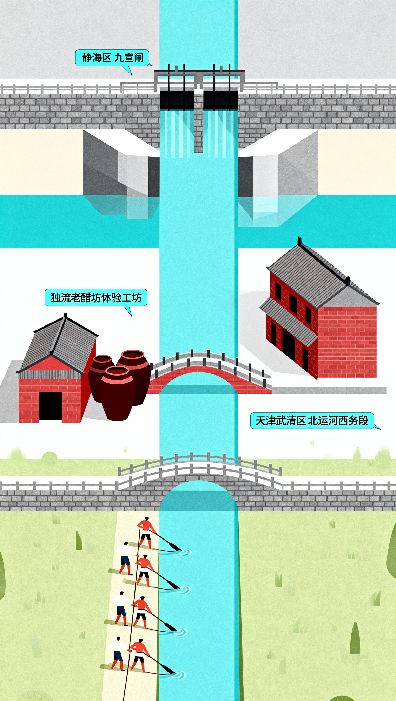
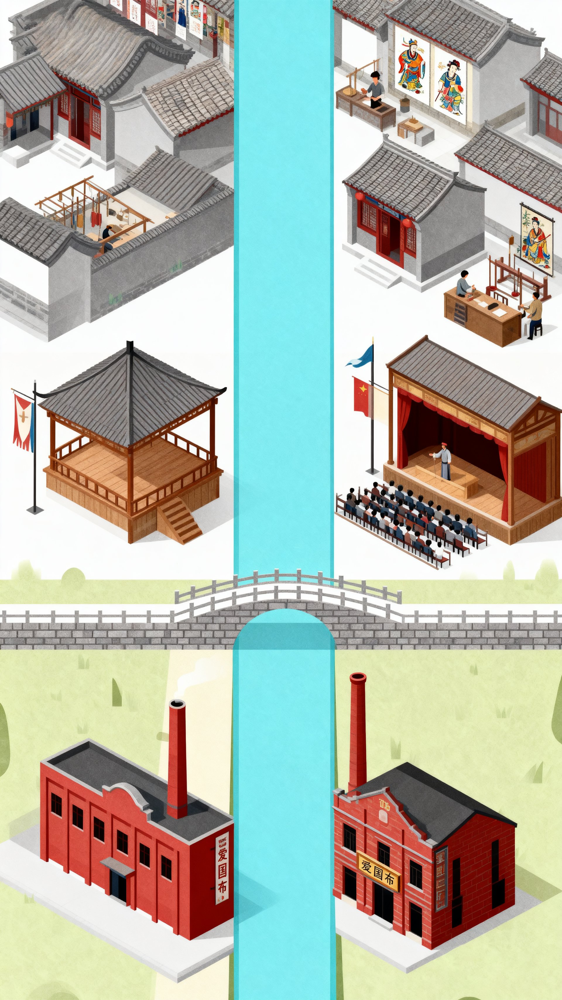

同人作品
基于已有世界观的故事再创作，以我自己的理解与想象赋予角色新的生命。
基于已有世界观的故事再创作，以我自己的理解与想象赋予角色新的生命。
完全独立的原创故事，涵盖都市、奇幻、科幻等多种题材。
橙光AVG视觉小说，含剧情文案、分支设计与角色塑造。
游戏叙事分析、机制拆解与设计反思。

九宣闸始建于明代，是南运河上重要的节制闸口，控制着上游来水与下游漕运的命脉。闸务关系重大，催生了专业的守闸人。其职责往往在家族内或师徒间传承，形成了一套观水情、启闸板、护漕船的独特经验体系。那“绞关嘎吱响，闸板寸寸提”的瞬间，决定着水流的速度与船只的通达。守闸人不只是水利工匠，更是运河脉搏的感知者。
如今的九宣闸已实现现代化水利管理，但闸畔的青石台阶、古老的闸门结构依然诉说着往昔。这里已成为运河文化的重要站点，人们可以在此遥想当年守闸人提闸放水的场景，感受“运河命门”的厚重历史。那份对水情的敬畏、对责任的坚守，已融入运河文化的基因，被一代代人传承。
癸卯年 六月初十 晴
一大早，天还黑着，我就醒了。河面上风凉飕飕的，还带着腥味，扑到脸上，一下子就清醒了。还是老样子，提上三尺长的铁板收，沿着青石闸门走一遭。大清早的石头又湿又滑，走得时候一定得一步一步走稳了，不然就和老张一样，摔地上半个月下不了床。不过我技术好，从来没摔过。
今天闸下的水流声和往日不一样，闷闷地，不清脆。我赶紧弯下腰，伸手探进水流，再仔细看水纹地走势。看来是上游前几日的雨下来了，水头快到了。我不敢怠慢，连忙把我儿叫醒，带着他来到绞关胖。我们俩一起抱住绞关的手臂，腰腿一起发力，铁轴与石槽嘎吱嘎吱响，闸板一寸寸被提起，汹涌的河水一下子涌出来。我看着我儿高大强壮的背影，第一次意识到我的儿子已经长大了，可以继承我的事业。我们陈家时代守着这九宣闸，到我这就是第三代了，从前我还担心儿子心太野，干不了这活，但是谁想到这小子越长大越沉稳，我这心一下踏实了。
六月十五 小雨
今天天不好，刚晌午，雨就下来了。这雨啪嗒啪嗒没下一会，远远看着，一支漕船队就来了，船队在闸前慢慢停下来，跳板上跳下来一个押运官。我一看，嘿，老相识了。老何一开口还是文邹邹的，什么麻烦了幸苦了，我就不爱听，拉着他进来喝水歇脚。老何可歇不住，走到闸边，看看水位刻度，又抬头看看天，愁得直叹气。我知道他在担心什么，我赶忙宽慰他。现在这天气可不是和启闸放水，万一雨再下会，很危险，不如让船工兄弟们靠岸歇歇，吃几口热乎饭，等雨过了给你们送过去。
过了会，雨果然停了，老何笑得眯缝眼。我赶紧让闸门提起，十余艘船漕一艘艘过去，老何给我招手。我就说就没我办不成的事。
六月二十 大暑
这鬼天气，没把人热死，但这也不耽误今天的大事。儿他娘一大早就开始收拾，杀了只鸡，香烛纸马也备好了，今天要祭拜河神爷，给他过生辰。
到了傍晚，天好容易凉快点，村里的人都来了。在河神庙前早就已经摆好了鸡、鱼还有瓜果。我穿着新衣服，站在乡老前，在庙前主持祭祀。我先点燃香烛，然后就开始念祝祷词，这是世代传下来的，我爹、我爷爷、我太爷爷祭祀的时候都要念，乞求来年平安，接着大家一起倒地跪拜。等祭拜完了，我就把供品跟大家分了，这就是“散福”，大家就一边吃一边笑。每次祭拜都是我最开心的时候，看着大家说笑，再看着我们世代守护的运河，心里美滋滋的。
独流老醋，源于明代，与运河血脉相连。是中国三大传统名醋之一，与山西陈醋、镇江米醋齐名，距今已有三百多年历史。其酿造技艺于2002年入选天津市非物质文化遗产名录。在漕运鼎盛时期，一坛坛老醋经由南运河进入海河，北上京津，南下齐鲁，成为运河饮食文化中流通的商品与味觉记忆。
如今，独流老醋作为重要的非遗品牌持续发展。传统的古法技艺，作为宝贵的文化记忆在行业内得到传承与保护。在独流镇，游客可以了解酿造流程，品尝正宗风味，感受运河之水与时间共同造就的匠心之作。
我叫石头，宣统二年一进秋，我就被爹娘送到这镇上的醋坊做学徒。我其实一点都不想来，我舍不得我爹娘。我娘对着我抹眼泪，一边给我收拾包袱一边哭，看得我也想哭。我爹拍拍我脑袋，嘱咐我手脚麻利点，让我多学多问，学个手艺以后饿不死。我有点懂又优点糊涂，但是我爹总不会害我，我就这么上路了。
我们独流镇顶有名，一是因为南运河三岔河口的水流在这里，一是因为我们这有名的醋。
刚到醋坊的时候，那味差点给我呛晕过去。如果只是酸味倒还好了，那味道说不上来，好像钻进我的鼻孔进我的脑子，冲得我睁不开眼。我的师傅是醋坊得大掌柜，精瘦精瘦的，眼睛比刀还锋利。我当时有些怕他。他领着我去院子里看上百口半埋在底下的紫砂缸，告诉我这醋是要运河的水、本地的高亮还要加上本地的日头、风和耐心，少一个都酿不出来。我装作听懂的样子点点头。
然后我就开始干活了，从最简单的看缸开始。每天天不亮，我就要跟着大师兄光着脚爬上梯子，一个个揭开缸顶的苇席盖子。我一开始不懂为啥一定要光着脚，这脚底板老被石子沙子扎。师傅训我，说脚底板最知道冷热，只要光着脚踩上去，才能指导缸里面的温度变化。我不敢顶嘴，只能光脚踩在满是露水的缸沿上，有时还差点摔下去。幸好有我师兄在，他在我后面托着我，还叮嘱我让我身子稳住，这样眼睛才能看准，鼻子才能闻细。我听话弯腰去闻，这味更冲了，我眼睛都睁不开，师傅还要在旁边考我，问我东角第三口缸什么成色了。我努力地去闻，好像酸里面有点酒气，还有点果子熟了的甜香。师傅告诉我那是醋正在转味，过两天就该下盐止酵了。我好像懂一点了。
酿醋除了手艺还需要运河水。坊里取水，不能在近岸的浅水，一定要摇着小船到运河中心水流最活的地方用水桶沉下去打上来。师傅说这是因为岸边的水有太多泥土气，不够活。等到了冬天，河面结冰，漕运听了，我们醋坊却忙了起来，为的是开春的第一批商船。
那时候整个镇子都是醋香味，一辆辆骡马车都拉着成坛的老醋，从各个醋坊汇聚到运河码头。可热闹了，船老大和醋坊掌柜们在岸上议价，扛活的脚夫们喊号子把一坛坛醋搬上甲板。那些醋就这么顺着南运河进入海河，北上京津，南下齐鲁。
我来到这的第三年，我终于有机会跟着师傅一起淋醋，就是把发酵成熟的醋装进淋缸，舀入运河水，利用古法让汁液一层层渗透析出。师傅让我尝了一口，那味道很香很香，还有回甘。我终于爱上了这里的醋，爱上了酿醋，之前师傅和我说的话，爹娘和我说的话我全懂了。
北运河河西务段，河道曲折，水流湍急。纤夫们赤膊弓背，脚踩险峻河岸，肩扛沉绳，以号子为令，齐心拉船前行。那一声声即兴编唱的劳动号子，不仅是协调动作的节拍，更是与自然抗争的生命呐喊，是运河上最原始悲壮的声音艺术。
如今的北运河武清段，经过生态治理与景观提升，已成为风景优美的滨水廊道。漫步于此，可在绿水清风中遥想当年“舟行水上、纤夫在岸”的艰苦与壮阔，感受运河文化中坚韧不拔的精神力量。
民国四年 三月初二 晴
河开了。在河西务等了七八天，冰排总算往下走了，我和兄弟们眼睛里直冒绿光，一个冬天过去，我们肚子里的油水早就刮干净了。
今天接了开春的第一趟活，是通州来的粮船，往天津卫送。这船老大好说话，价钱老规矩，还管两顿饭。
我和兄弟们一下子来了干劲，我一嗓子吼出去：“搭肩——”。身后十几个兄弟齐刷刷把纤绳往肩膀上套，拿绳子死沉死沉，像一条大蟒蛇，往肩上一搭感觉骨头都断了。这天凉，绳子也沉，要想活干好，非得使点绝招，那就是喊号子。什么“天上的日头毒又毒”“地下的喝水冷又冷”，几句喊下来身子也热了，也有劲了，而且得是喊得越大声越好。我边喊边留意，这一群人属我喊得好。
三月初五 阴
要说我们最怕的就是过青石砬子了，那简直就是鬼门关。路窄得跟刀尖一样，下面就是翻滚的水流。只要一到这，我准得喊：“收绳——提起——”。所有人都紧紧贴在石壁上，屏住呼吸，一寸一寸挪动，这时候就又要喊号子了。
“加把劲啊——过了鬼门关！”
“阎王爷嫌咱——命太贱！”
喊几句提提气，再一点点磨过去，每次过去了，我都松口气。
三月甘八 晴
这趟活总算是完了，结完账，手里拿了钱，心里才踏实，这次也是有惊无险啊。到了码头边，看到一个学生模样的人那个本子不知道再写什么。看到我过来他跑来问我会不会唱号子，说这是民间艺术。
这可是问对人了，这一片谁不会唱号子，但是属我唱得最好，但是说啥民间艺术我也不懂，那学生好像想听，我就跟他喊了几句，我一边喊，他一边记。后来我才明白，他那我们的号子当文化嘞。我是不懂这那的，我只知道，没有这号子我们就干不了活，这鬼门关也过不去，有了号子就有了胆子，有了吃饭的家伙。不管了， 好好歇歇，明天，又要回去了。

杨柳青木版年画自清代中叶盛行，以杨柳青镇为核心，辐射南乡三十二村庄（如周家庄、李家庄、赵家庄、古佛寺、炒米店等），形成庞大的年画生产体系。作坊里香气混杂，墨汁、木料、炭条、宣纸轮番上阵，画师们晨起听码头号子、傍晚看南运河渔火点灯，打样、雕版、套色、开相、裱画一气呵成。年画图案丰富多彩，吉祥喜庆，流行于天津及周边地区的民居门楣、商铺橱窗。那时的杨柳青，是年画手艺人聚集的中心，也是运河水路贸易带动下的文化繁盛之地。
时光流转，杨柳青镇的年画作坊虽少了当年的繁忙，但木版年画仍通过博物馆、文创体验店和节庆活动延续。游客可走进改造后的作坊，观摩打样、刻版、套色、开相、裱画全过程，体验“墨香、纸香、木香”的古老工艺。作坊旁的南运河水面静静流淌，古运河桥梁和村落轮廓依稀可辨，仿佛把人带回民国时期的作坊日常。年画不仅是文化遗产，更成为市民和游客理解天津运河沿岸历史生活的窗口，让古老的年味在现代城市中得以延续。
一、勾：出样子——腊月十六·晨
霜花结在门楣上，南运河的雾正漫过九宣闸，又到了必须缩着脖子开门的年关。
听见辛口码头那头传来拖船的号子，我便知道自己该起来开工了。无论是对岸的商船，还是我用来糊口的这门年画手艺，都跟运河水一样从祖祖辈辈那代流淌下来，师傅在世时常说：“咱辛口的水，打从光绪九年宣闸那会儿就养人。”
作坊里杜梨木板的香气混着新磨的墨味，比后巷玉佛寺的檀香还提神。今天要做的是《莲年有余》墨线版，讲的是吉祥喜庆、年年有余。天津人过年，门上少不了贴这幅画：胖娃娃抱鲤鱼，脚踩莲花，寓意“有鱼有莲”“连连有余”，图个好兆头。
我让徒弟小顺磨墨，砚台里墨汁映着窗棂，跟窗外的运河水一块晃。我拿起炭条开始打样。行里把这步叫“勾”，也叫“出样子”。是整幅年画的第一步，相当于立骨架。画师得先照着画店要的题目或自己的心意设计图样，初稿打完，再一遍遍改，最后用白描的法子勾出干净线稿，转到薄棉纸上备用。杨柳青年画的底子，全靠这一勾的准头。
小顺磨完墨也有样学样，捏着炭笔打草稿，鱼肚画得比漕船还宽。我敲他脑袋笑骂：“鲤鱼再肥也得收着劲儿，你这画得像没扎口的粮袋！”
二、刻：雕版——腊月十七·晚
腊月二十三，天擦黑，屋外风刮得瓦片直响。老霍正低着头刻那块《莲年有余》，手底下的木板被刨得细腻光滑，凿子一进一出，卷起的木屑打着旋儿落到膝头。
“瞅这鲤鱼，肥得好！”他乐呵呵地说，胡子尖都颤。老霍刻的是墨线版——整幅画的“骨头”，得稳，得有神气。他爷爷当年给光绪爷画过“贴落”，老霍总爱提这茬儿，说手上的茧子比刨子还硬。
我问：“‘点套’分了几色？”老霍头也不抬：“红黄绿蓝，四色。”作坊里干活的都懂，“点套”是印刷前的分色定版，也就是在画稿勾好、刻出墨线版之后，要由画师确定整幅画要用几种颜色、每种颜色印在什么位置。每定一种色，就得刻一块对应的色版。三色拙朴，四色活泛，五色热闹，六色就得大师出手。所以老霍说红黄绿蓝四色，其实是在显摆手艺，说明他刻的墨线版分色讲究、层次够足。四色能配出七八种过渡色，既热闹又不俗，正是行里人常夸的“四色套，八面光”。
小顺在旁边打下手，我让他学着认刀。圆口刀刻弧线，莲花瓣、胖娃娃脸都靠它；斜口刀刻直线，鱼鳞、衣褶要利落；三角刀专管细活儿，眼眉、叶脉、鱼须。
“师傅，”小顺问，“刻到啥时候才算出师？”我重复了一遍师祖讲过的话：“等你刻的鲤鱼能让猫去扑，就算成了！”
三、印：套色——腊月十八·午
“啪嗒！”我把木夹子拍在画案上，宣纸绷得紧紧的。小顺蹲在旁边，我指着纸边说：“印画先得夹牢，松了，印出来就是歪嘴娃娃！”他慌忙学着夹，我接过来示范：“天头一道，地脚一道，中间一道，三夹稳喽，纸才不会跑。”
案上放着昨夜晾干的墨线版，旁边一溜排着红、黄、绿、蓝四色版。印画的规矩，是先骨后肉——墨线先印出神气，再套彩添喜气。
我先在墨线版上匀匀抹上墨，左手翻纸，右手拿起鬃刷。刷子在纸上轻轻滑过，一下、两下，墨迹便透了上来。力道必须把握好，趟子使得太轻，线不匀；太重，又容易糊。印完一色，换一版，一遍遍对准十字标。先印红，红是喜气的根儿。娃娃的腮、鲤鱼的鳞尖，都是红。刷子一趟过去，整幅画立马亮了。再印黄，黄是光，是福气。它落在元宝、腰带、莲心上，添得整幅画金灿灿的。第三是绿，绿衬生意，也养眼。莲叶、鱼尾、门帘，都靠它生出活气。最后压蓝，蓝是压轴的色，不多，只点在云纹、鞋帮上，稳着气场，不让前头几色显得太喧闹。
四版一层层叠上去，趟子扫动的节奏像河水拍岸，纸面一点点透出年味。晾起来看，红不俗、黄不燥、绿不脏、蓝不暗，热闹得刚刚好。
四、画：开相——腊月十九·晚
油灯的火苗子舔着灯芯，把画案子照得一片黄澄澄。我跟小顺蹲在“门子”前——今儿该给《莲年有余》的胖娃娃“开相”。
小顺笨手笨脚捏着细狼毫笔，金粉调得太稀，一滴黄汤子滴在鱼眼睛上，他“哎哟”一声，脸立马白了。我照着他后脑勺拍了一巴掌：“慌嘛！拿吸水纸沾，别擦！明儿让你娘拿鸡蛋黄给你补补手笨！”
作坊里颜料罐子叮当作响——石青是拿蓝铜矿碾的，末子细得能飘起来；藤黄搁在粗瓷碗里，跟南运河的迎春花一个色。我眯着眼瞅那胖娃娃的脸，想起画诀里的娃娃样：“短胳膊短腿大脑壳，小鼻子大眼没有脖”。
外头忽然“砰”的一声炸响，小顺吓得笔都掉了。我扒着窗户一看——是西巷二傻子在放二踢脚，红纸屑飞得比玉佛寺的塔尖还高。老杨头推着车吆喝：“山楂的！糖葫芦串儿——”小顺吸溜着鼻子：“二十三祭灶，我娘说要炸糖糕……”“先把活儿干好！”
“师傅，咱这手艺，明年还能有饭吃不？估衣街的洋布庄都卖机器印的画了……”灯芯爆了个小花，我叹口气，把油灯往他那边推：“明儿还得给石家大院那幅‘开脸’，早点睡。记着，只要还有人家贴年画，咱手里的笔就撂不下。”
五、裱：装裱——腊月二十·晨
小顺一早就把糨糊熬好，我伸手试了试温度，不凉不烫，正合适。案上摊着昨夜晾干的《莲年有余》，胖娃娃的红袄绿裤透着光。
“裱画靠的不是力气，是稳。”我叫小顺过来打下手，用刷子顺着纸背抹糨糊。头道托纸贴上后，轻轻赶气、拍平，再晾。第二道、第三道都得等干透再托，这叫“三托三晾”，急不得。好画得靠好裱，最后的成果板正、透气、扛潮，挂十年都不会走样。
等日头爬到文昌阁檐角，我抹了把汗，把画晾在竹架上。四五天的工夫，就为了这一幅。等颜色透干，石家大院的伙计来取，人家挂在堂前，也就图个热闹。无论咱做得再仔细，到了他们眼里，也不过是年节里的一幅买卖画。吃过腊八粥，贴上去，过了元月十五就撕下烧了。咱这些手艺人忙得眼花手软，图的就是一声“行价没变”。
有时我也琢磨，这门手艺还能坚持多久。不过，万一还有人想买呢？年画嘛，喜气的事，总不能断在咱这代人手上。
南运河上的渔火亮了，独流木桥的轮廓在暮色里像幅水墨画。小顺蹲在门槛上数铜板，我拍他后背：“收好了，改明儿给你娘做身新衣裳，剩下的给你爹打壶酒。”
天津杂耍，作为北方曲艺的重要发祥地，自民国初年起便活跃于大运河沿岸的小梨园、大观园等舞台。杂耍园子（茶园）多依运河而建，台下观众与船工、茶客亲近互动，演员即兴应对观众“垫话”，形成独特表演传统。演出内容称为“什样杂耍一锅烩”，融合京韵大鼓、梅花大鼓、河南坠子、山东梨花片等各地曲艺技艺，并强调“现挂”，即演员根据现场情况临时发挥、加花点（即兴的装饰性表演或唱词）。代表名家刘宝全以京韵大鼓闻名，唱腔雄浑、节奏明快，即兴能力强；史文秀擅长梅花大鼓，注重声势结合，鼓点与身段变化精彩。“戏剧大成于北京，杂耍发祥于天津”的深厚底蕴，令杂耍成为津门特有的城市文化符号。
随着时代变迁，传统杂耍文化面临传承断层和观众流失，但天津杂耍正积极推动复兴与保护。多家老字号园子改造为文化演艺场所，定期举办杂耍表演和曲艺讲座，让公众体验原汁原味的津门味道。近年来，天津市已启动杂耍申报国家级非物质文化遗产工作，这不仅肯定了其历史价值，也为艺术创新提供政策支持。通过申遗，年轻观众被吸引参与演出与学习，相关部门加强整理与研究，天津杂耍的传统技艺、表演规则和互动文化得以保存和传承。
“当啷——！”茶房老李手一抖，铜壶盖掉地上，正赶上戏台上张寿臣抖包袱：“您猜咋地？京剧名角登台得鸣锣开场，咱这杂耍园子的角儿上场——得先接茶客扔的糖堆儿！”
满场都乐了，运河风裹着鱼腥味吹进杂耍园子，无论是老街坊还是新游客都拍起手来。
船工老张蹲第一排，啃着炸糕接话：“刘宝全先生，您那《白帝城》今儿得带‘花点’啊！”台上先生立马改词：“赵云护主——就跟您过河似的，千难万险盖不住的稳当！”台下哄笑叫好：“听听！张大哥，明儿您过了三岔口，可得给刘先生捎两条活鱼来！”——这才是天津杂耍园子的热络气儿，台上台下拿码头事儿逗乐。
天津杂耍的词儿是“现挂”的，不止今天这场是这样。河南坠子田姑娘抱着坠胡上台，见台下估衣街的老板娘正扒拉算盘，张口就改了词：“穆桂英披挂整，不挂帅印扛面袋，估衣街的布衫子，全靠商船遥运来！”茶房老李拎着锡壶跑过，接了句荤口：“田姑娘要是扛面袋，船工们抢着帮你拉纤哟！”台上姑娘脸一红，手里坠胡一挑，调子拐了个天津快板的弯儿，逗得满场茶碗碰得叮当响。
咱天津是“什样杂耍一锅烩”。刚看完史文秀的梅花大鼓，转眼就见抖空竹的小子把空竹甩成漩涡；戏法王的坛子在手里转得比漕船舵还溜，啪地一声扣桌——变出仨狗不理包子！
月上中天，运河里的船点起灯笼，茶园的汽灯把“杂耍”俩字照得发烫。真正的天津味儿，就在这园子里：不装腔，不拿乔。糖堆儿飞满空，台下观众随口接话，手巾、道具在空中翻腾，汗珠、笑声、喊声混成一股热气，活泛泛地淌进老少爷们的心里。
民国初年，天津已是北方最重要的纺织重镇。漕运衰而商贸兴，沿运河两岸的工厂烟囱与机织声，成为近代中国“新工业文明”的象征。自周学熙创办直隶工艺总局以来，天津织染业迅速由手工坊转入机器化生产。1904年创立的“天津织染缝纫公司”，率先引入英式电力织机；1915年官办“直隶模范纺纱厂”开工，成为北方机器纺织业的起点。其后华新、裕元、宝成等民族资本纱厂相继成立，织机林立，昼夜轰鸣。
“爱国布”的旗帜在五四运动中高高飘扬。为抵制洋货，天津工人以国产棉纱织布，染上蓝印、花纹与“华新”商标，称为“爱国布”，销往北平、山东、河南各地。彼时的织工，多为出身贫寒的女子，操梭转机间，终日纺线。人称“织娘”或“机房红”，她们身影穿梭于纱机之间，犹如机器的脉搏，与城市的呼吸同频。
昔日的大胡同织染区，机杼之声早已淡去，而天津织染工业的精神却在城市记忆中延续。天津青年设计师与非遗传承人合作，将“爱国布”图案与蓝印花布、织锦纹样相结合，推出文创服饰与织品，将旧日工房的机械美学重新转译为当代审美。织染，不再只是工业的象征，而成为天津城市精神的载体——以柔制刚，以工显智，在流水的节奏中延续一座城市的生命力。
民国八年五月六日 天津《益世报》特讯（本报记者 张伯苓）
天津电——天津所产“爱国布”，驰名全国，近来尤为津门之冠。其兴起之原，实肇于本世纪初叶民族危机方殷、爱国思潮方炽之际。清廷末年，洋布充斥，土布销路渐废，织匠失业，街巷机声日稀。时直隶总督袁世凯以“新政”为号，设直隶工艺总局于津，以“振兴工艺、奖劝民办实业”为旨，劝民间自织自染，期以挽回利权。然因外货倾销，国人好洋，成效寥寥。
迨至光绪三十一年（1905），举国掀起反美爱国运动，天津工商学三界首倡“抵制美货”“提倡国货”，《不售美货说帖》《抵制美货实行办法十则》相继传布。商界名士宋则久，时任敦庆隆绸缎庄经理，率先登《大公报》广告，宣称“代售天津各厂所织诸样土布”，并题名“爱国布”，取其“以布表志、以货报国”之义。此举一出，群商效之，国货风气乃大启焉。
【实业自强 学界助宣】记者近日至估衣街采访，所见爱国布之旗帜几遍街衢，男女学子多着土布衫，襟前绣五色旗徽。天津女师学生李慧珍登台演说曰：“洋布着身，犹受外侮；土布披体，方见自尊！”声震屋瓦。各布庄悬挂“爱国布”“中国人”诸商标，顾客盈门，排队者自朝至暮不绝。裕昌布庄东主赵德山更宣称：“凡购国布者，学生半价，市民满丈赠徽。”城西“天津实业工厂”厂主韩锡章受访言：“自国货运动起，厂中织机百余架，昼夜不歇。南开、北洋学生多来义务助销。”
【学界倡言 商界响应】记者近日走访城内多家布庄与织布厂，所见所购爱国布均附商标，精美印制，或绘五色旗，或饰狮球、麒麟、双凤、聚宝盆、八仙、魁星等图案，寓意爱国富民；亦有飞艇、火车、轮船、汽车等图样，象征时代新机。各厂主多题告白于布边，言“提倡国货、振兴工商”“精求实业、挽回利权”，并嘱顾客“认明商标，庶不致误”。其文虽质朴，而情切切，见商人之良心、国人之志气。
【质精于工 名扬四方】记者所访各厂，织布机改良已多，布质较前精细。民立第三半日学堂工艺厂曾与技师共研，将机器改良后，织布速度倍增，布质更为细密。《大公报》曾称赞：“其功可抵美布矣。”诸厂普遍重视机件、染料、花样之改进，织造素布、花布、闪花布、丝光布，以及袍料、被面等各式品类。工人昼夜操机，顾客络绎不绝，学界商界交相响应，皆以土布示志，彰显爱国之心。
目前，天津爱国布风行津门，学生、市民争相购买，五色旗飘处，即见其布之影。厂主与学子同心，昼夜奔忙，热闹非常，其盛况可谓前所未有。
一条运河 · 千年文脉 · 数字新生
回到上游 ↑